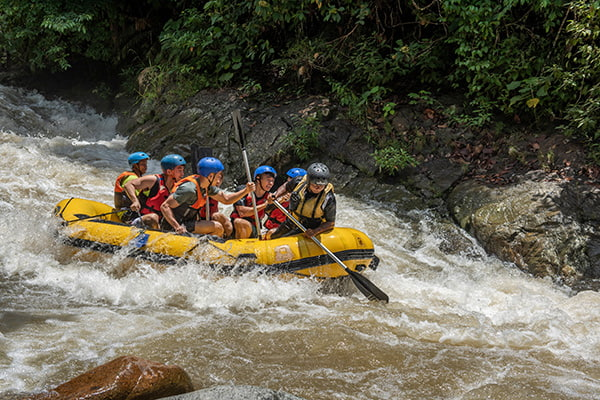
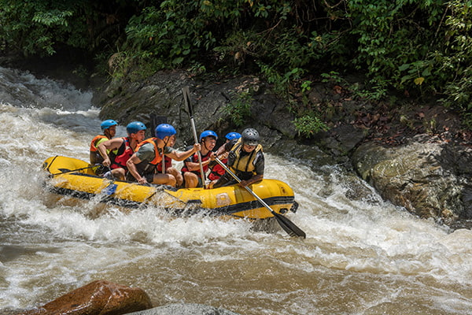

Our mission is to provide unforgettable rafting experiences, promoting adventure, safety, and respect for nature. We are committed to creating an exciting and safe environment for all our clients, fostering teamwork and connection with the natural surroundings as we explore the world's most stunning rivers. Live the adventure, conquer the waters.

 
